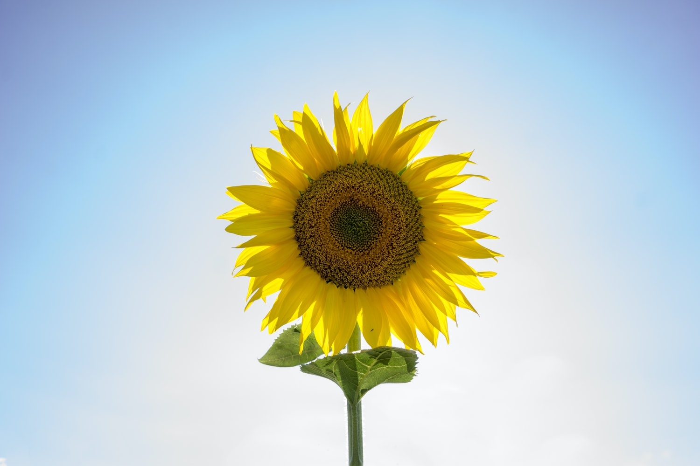
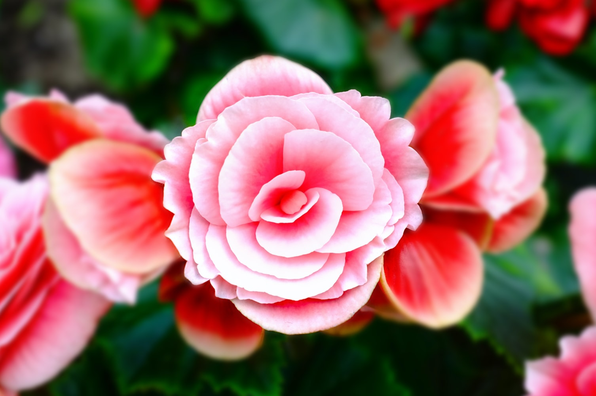
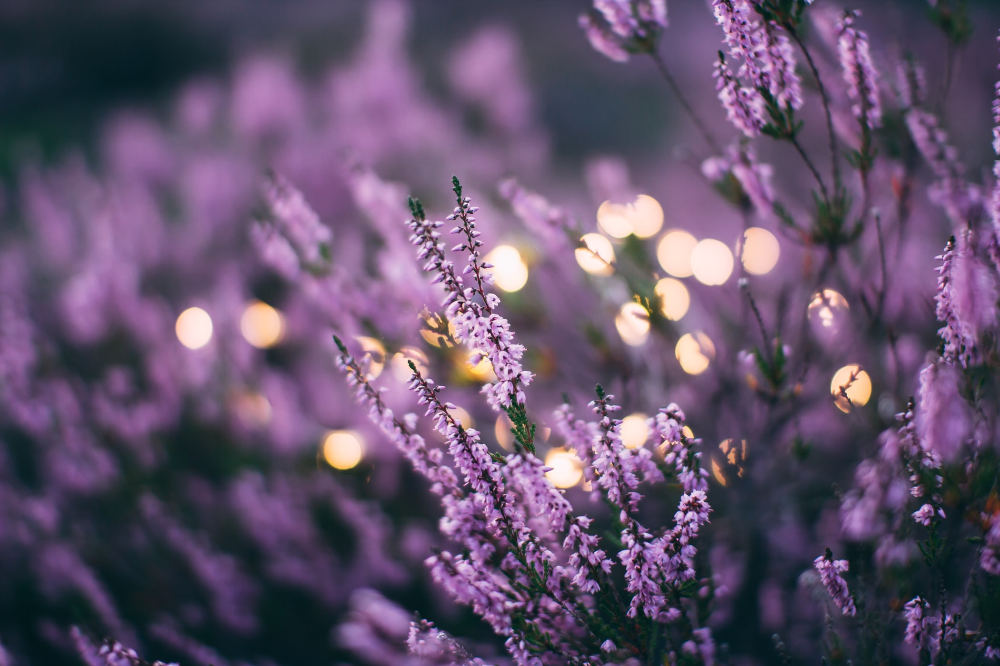
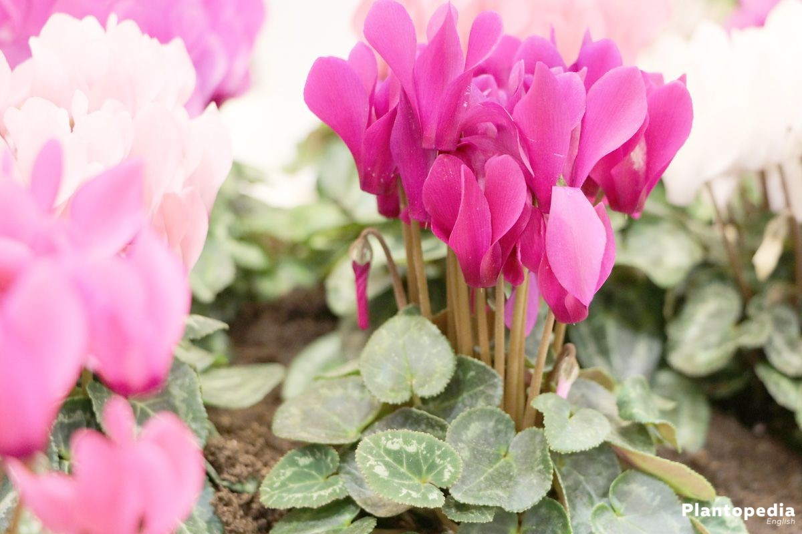
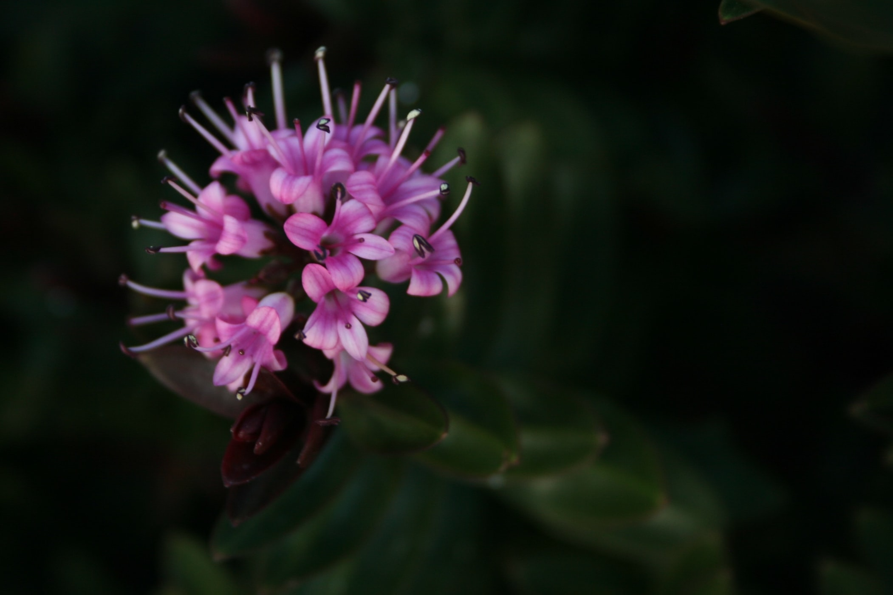

Solsikke
Den smukke, gule solsikke er indbegrebet af dansk sommer. De kan blive op til 4-5 meter, hvis du følger vores råd om dyrkning af tournesol - blomsten, der altid vender sig mod solen.
Roser
Der findes roser, som klarer sig fint i halvskygge – nogle få roser kan endda klare sig i fuld skygge. Langt de fleste roser trives imidlertid bedst på en solrig placering. Generelt siges det, at jo mere lys en rose får, jo flottere vil den udvikle sig. Lys giver nemlig rosen energi til vækst.
Lavendel
Lavendel er en meget nøjsom plante, som ikke stiller de store krav til jordbunden. Faktisk trives lavendel bedst på en tør og mager jord og tåler ikke en meget tung og våd jord. Den stammer oprindeligt fra bjergegnene i middelhavsområdet, hvor jorden er klipperig, veldrænet og mager.
Alpeviol
Hvis du ønsker at skabe den romantiske have med nostalgisk stemning, er en alpeviol i sarte farver og måske med frynsede blomster et sikkert valg, mens en af de mange pangfarver kan peppe efterårets farvespil op. Ligeledes kan Cyclamen sammensættes med andre matchende efterårskulturer, så du får et harmonisk tone-i-tone resultat.
Hebe
Hebe er en ideel grøn plante til altanens og terrassens krukker. Hvis du planter flere forskellige sammen, får du en spændende grøn struktur, der kan vare vinteren over og muligvis i flere år. Planten passer også fint i stenbedet eller langs boligens sokkel - dog egner hebe sig ikke som stueplante.